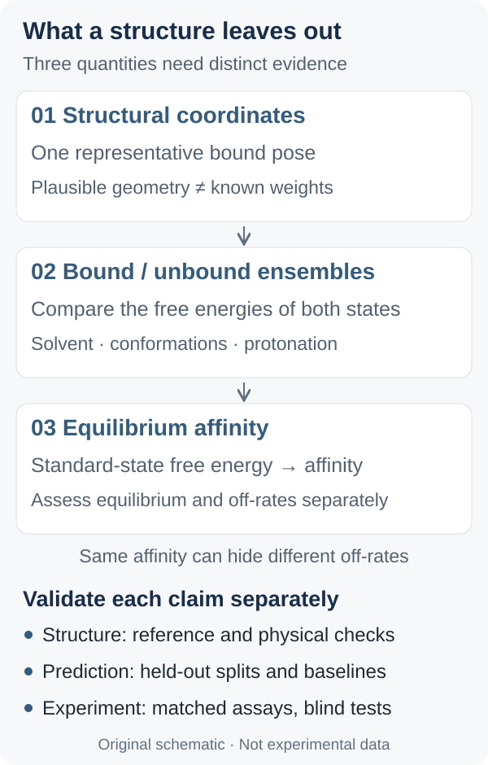

# Proposed protocol; not executed
records = curate(raw, keep_assay=True, keep_endpoint=True)
records = preserve_censoring(records) # >10 is not =10
train, valid, test = deployment_split(records)
audit_overlap(train, test, by=["identity", "scaffold", "protein_cluster"])
freeze(versions, weights, templates, seeds, split_manifest)
baseline = fit_and_select_fingerprint_model(train, valid) # no 3D
baseline_predictions = baseline.predict(test.inputs)
predictions = []
for sample in test:
out = frozen_boltz2(sample.inputs)
predictions.append(record(sample.id, out.affinity_pred_value,
out.affinity_probability_binary, out.pose, out.confidence))
results = join_by_id(test, predictions, baseline_predictions)
report_within_target_and_assay(results)
report_by_pose_quality(results.with_reference_structures())
bootstrap_group_metrics(results, unit="scaffold_or_target")
清洗时保留实验类型、单位、重复测量和不等号；常规 MAE 只用未删失的可比标签，删失比例另报。基线至少包括训练集均值、仅用配体指纹的模型及固定协议的对接打分；有靶点历史数据时再加靶点均值。它们检查模型是否主要依赖分子大小、相似骨架或靶点偏好。常数均值基线只比较 MAE；对接打分须先在验证集校准到相应标签尺度，才能比较绝对误差。
Why a Correct Structure Does Not Guarantee Reliable Affinity: AlphaFold 3 and Boltz-2
A statistical-mechanical counterexample explains why a pose cannot determine affinity. We examine Boltz-2 labels and units, then propose an evaluation with leakage checks and baselines. No experiments were run.
If a model places a ligand correctly in a pocket, does it also tell us how tightly the ligand binds? No. A correct pose constrains the geometry of a bound state; affinity compares the statistical weights of bound and unbound states. This distinction determines how to use AlphaFold 3 and Boltz-2, and what evidence would validate their predictions.
This article draws on the AlphaFold 3 paper, published on 8 May 2024, the Boltz-2 v1 preprint, posted on 18 June 2025, and official implementations inspected on 6 October 2026. It does not claim to survey every subsequent development. The derivations and evaluation proposal below are analytical work: no model inference, molecular simulation, or laboratory experiment was performed for this article, and no performance results were generated.
1. What a structure leaves unspecified
AF3 uses a diffusion module to recover atomic positions from noisy coordinates. Its paper explicitly notes that repeated random samples do not approximate the solution ensemble. The official output documentation defines ipTM as confidence in interface structure. It is neither an affinity expressed through molar concentration nor a binding probability calibrated for the screening library at hand. Moving from “the model trusts this arrangement” to “this molecule must bind tightly” changes the quantity being predicted.
Consider reversible binding with a single stoichiometry, \(\mathrm R+\mathrm L\rightleftharpoons\mathrm{RL}\), in dilute solution. At fixed temperature and solution conditions, with standard concentration \(C^{\circ}=1\,\mathrm{mol}\,\mathrm L^{-1}\):
Here \(R\) is the gas constant and \(T\) the absolute temperature; \(k_{\mathrm B}\) below is the Boltzmann constant. A tenfold difference in \(K_{\mathrm d}\) therefore corresponds to \(RT\ln 10\) in free energy, rather than a fixed coordinate error. The statistical-thermodynamic calculation compares bound and unbound partition functions, accounting for standard-state, translational, and rotational normalization. A single contact score cannot simply be substituted into that expression.
2. A counterexample: the same minimum, different affinity
To expose the missing information, construct a toy model. Two candidate systems, \(\mathrm A\) and \(\mathrm B\), have binding basins with the same minimum position and depth, and identical unbound partition functions. Only their effective configurational volumes \(\Omega\) differ. Approximate each basin as having constant energy \(E\) and use a consistent integration measure. Then \(Z_{\mathrm{bound}}\approx\Omega\exp\!\left(-\frac{E}{k_{\mathrm B}T}\right)\), giving the following difference in molar binding free energy:
Even when both representative poses are “correct,” a wider bound basin can change the free energy. Greater flexibility of the free ligand changes the unbound statistical weight and may change the conclusion again. Water, protonation, and receptor reorganization cannot be eliminated by inspecting one contact map. This is a counterexample to the sufficiency of a pose, not a practical entropy estimator for real ligands: real basins are not flat, and their energies and widths usually change together.

Figure 1 · Original conceptual schematic, not experimental data. Arrows indicate the information needed for interpretation, not a mandatory sequence of three software tools.
Equilibrium and kinetics also need separating. In a simple two-state mass-action model, \(K_{\mathrm d}=\frac{k_{\mathrm{off}}}{k_{\mathrm{on}}}\). The same ratio permits different dissociation rates and residence times. Describing local conformational fluctuations does not measure transition rates; predicting equilibrium affinity does not necessarily require reconstructing a complete real-time trajectory.
3. Boltz-2 adds a supervised task
In the pinned affinity implementation, predicted coordinates become distance bins that are combined with trunk pair representations. A Pairformer focuses on protein–ligand and intra-ligand interactions; pooling then feeds continuous and binary outputs. Geometry can thus inform the prediction, but this regression head does not explicitly evaluate the partition-function ratio above.
Sections 3 and 4 of the paper explain that continuous supervision mixes measurements such as \(K_{\mathrm i}\), \(K_{\mathrm d}\), and \(\mathrm{IC}_{50}\), with increased weight on within-assay pairwise differences. A simplified model helps explain the latter: \(y_{ia}=g_i+b_a+\varepsilon_{ia}\), where \(b_a\) is an offset shared by assay \(a\). Subtracting measurements within that assay cancels \(b_a\); subtracting across assays does not. This is an explanatory model proposed here. It cannot cancel compound-specific interference, different mechanisms of action, or nonlinear biases.
The practical implication is to first ask whether the model ranks a series within one target and assay, before asking whether its absolute values are comparable across targets. Success at local ranking does not automatically answer the second question.
4. Align units and labels first
The official prediction documentation describes affinity_pred_value on the \(\log_{10}\!\left(\frac{\mathrm{IC}_{50}}{1\,\mathrm{\mu M}}\right)\) scale, with lower values indicating stronger binding. Given the paper’s mixed-label supervision, an \(\mathrm{IC}_{50}\)-like prediction is the more careful interpretation. If the output is \(y\), unit conversion gives:
This quantity does not have units of \(\mathrm{kcal}\,\mathrm{mol}^{-1}\) and cannot simply be treated as \(\mathrm pK_{\mathrm d}\). For example, for simple reversible competitive enzyme inhibition satisfying Michaelis–Menten and the corresponding steady-state assumptions, the Cheng–Prusoff relationship is \(\mathrm{IC}_{50}=K_{\mathrm i}\!\left(1+\frac{[\mathrm S]}{K_{\mathrm m}}\right)\). Changing substrate concentration can change the readout. The affinity feature in the inspected version supports protein–small-molecule systems and should not be directly extrapolated to protein–protein or nucleic-acid binding. The continuous head is intended to compare active molecules, whereas affinity_probability_binary serves binder/decoy classification. Calibration still needs checking when the screening library has a different positive prevalence.
5. How to test whether structure helps affinity prediction
The following is an evaluation design that has not been executed. First choose the deployment question. For a new chemical series against a known target, use a temporal holdout with scaffold separation. For unseen targets, hold out protein homology clusters and separately report similarity to training ligands. These are two tests; one aggregate score on a random split cannot establish success at both.
# Proposed protocol; not executed
records = curate(raw, keep_assay=True, keep_endpoint=True)
records = preserve_censoring(records) # >10 is not =10
train, valid, test = deployment_split(records)
audit_overlap(train, test, by=["identity", "scaffold", "protein_cluster"])
freeze(versions, weights, templates, seeds, split_manifest)
baseline = fit_and_select_fingerprint_model(train, valid) # no 3D
baseline_predictions = baseline.predict(test.inputs)
predictions = []
for sample in test:
out = frozen_boltz2(sample.inputs)
predictions.append(record(sample.id, out.affinity_pred_value,
out.affinity_probability_binary, out.pose, out.confidence))
results = join_by_id(test, predictions, baseline_predictions)
report_within_target_and_assay(results)
report_by_pose_quality(results.with_reference_structures())
bootstrap_group_metrics(results, unit="scaffold_or_target")
Curation must preserve assay type, units, repeated measurements, and inequality signs. Compute ordinary MAE only on comparable, uncensored labels and report the censored fraction separately. Baselines should include the training-set mean, a ligand-fingerprint-only model, and a docking score under a fixed protocol; add a target-specific mean when historical data exist for that target. These test whether performance mainly reflects molecular size, related scaffolds, or target preferences. Evaluate constant-mean baselines with MAE only; docking scores require calibration to the relevant label scale on validation data before comparing absolute errors.
For a pretrained model, auditing only the new split is insufficient. Record the temporal boundaries and known overlaps of structural training data, affinity training data, and template libraries. If a complete training inventory is unavailable, mark contamination status as unknown. Fit all normalization, calibration, thresholds, and hyperparameters using training and validation data only.
Report within-target, within-assay Spearman correlation and MAE alongside individual group scores. Evaluate classification separately with PR-AUC and probability calibration, documenting positive prevalence and the source of negative examples. On the subset with reference structures, stratify affinity errors by pocket-aligned ligand RMSD, stereochemistry, and clashes. That subset favors binders for which structures are obtainable and cannot stand in for the whole screening library. Resample independent scaffolds or targets for uncertainty intervals, so close analogues do not masquerade as many independent observations.
6. What evidence would change the interpretation?
If the complex model still fails to beat the ligand-only baseline among accurate poses, there is insufficient evidence that its three-dimensional representation adds value. This is not a causal proof that the model ignores geometry. Isolating geometry’s contribution would require controlled interventions through supported interfaces, holding other inputs fixed while avoiding artificial out-of-distribution perturbations.
A more valuable next step is to freeze a candidate ranking and test it blindly under consistent assay conditions, reporting failures, repeatability, and uncertainty. Structural models can propose specific mechanistic hypotheses; affinity models can help allocate experimental resources. Neither contribution requires mistaking a convincing coordinate model for a measured binding free energy.